THE EASTIE NECKLACE
Urban Design for Housing in East Boston
The project is structured around a set of coordinated urban strategies that guide growth through affordability, community, and resilience. These strategies culminate in three distinct mixed-use nodes, each responding to its context while contributing to a cohesive whole. Together, the three nodes accommodate approximately 12,126 new residents while creating inclusive public spaces, weaving East Boston into a resilient, connected urban landscape.
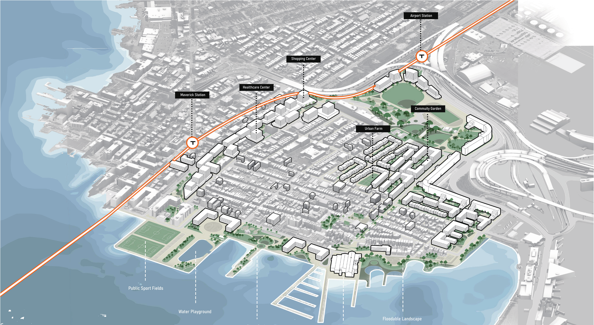
Risk, Spatial Exclusion and Vulnerable Communities
As flooding becomes increasingly severe, several neighborhoods in East Boston are growing more vulnerable to climate risk. At the same time, privately owned waterfront land and new real estate development restrict public access and intensify displacement pressures on long-standing local communities, placing the most vulnerable residents at heightened social and environmental risk.
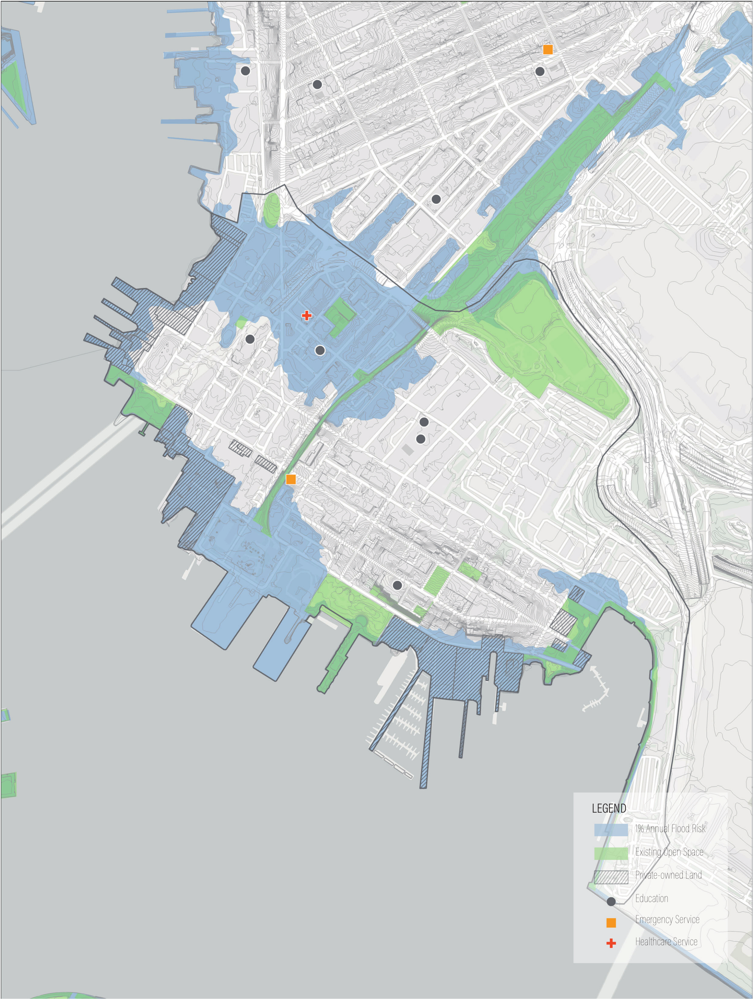
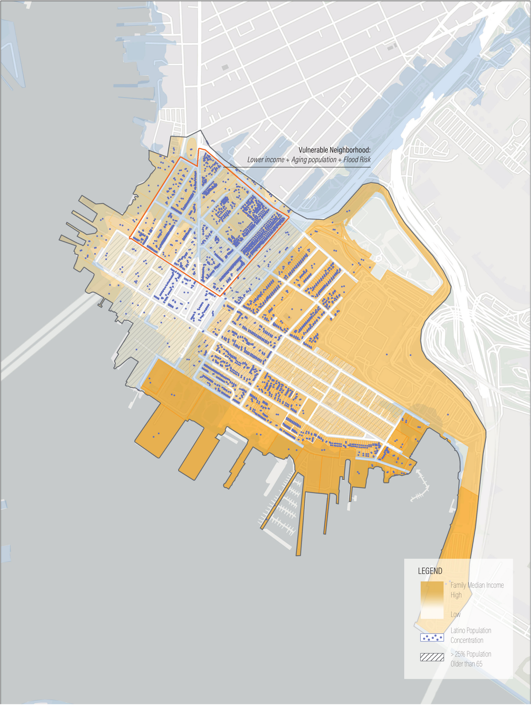
Boundaries within Site
Although East Boston contains a number of open spaces, they are often disjointed and isolated, cut off by fences, infrastructure, or limited street access. These physical barriers fragment the urban fabric, making everyday life in East Boston feel disconnected and spatially divided.
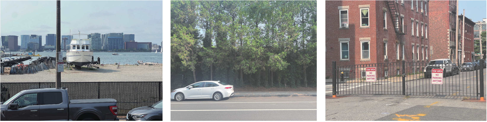
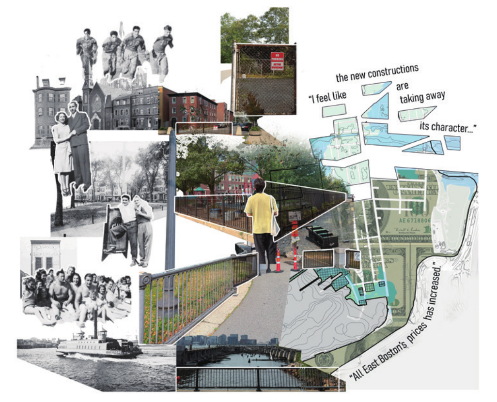
Fragmented and Displaced
Among the most vulnerable neighborhoods, there is a significant Latino population that forms a vital part of the site’s local culture and identity. Recent development pressures displace these communities, eroding the cultural character of the area. This project aims not only to reconnect the site physically, but also to preserve and strengthen its social identity.
Urban Strategies
This project addresses the intersecting challenges of flood risk and housing affordability through a strategic reorganization of urban development. New housing is concentrated in lower-risk areas of the site, creating safer and more resilient living environments while reducing exposure to climate hazards.
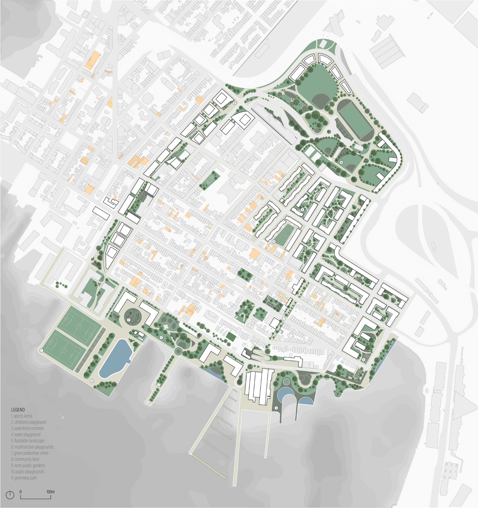
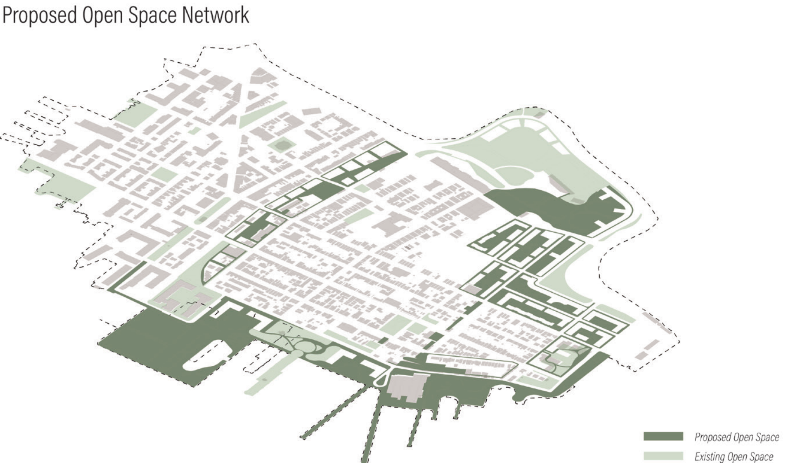
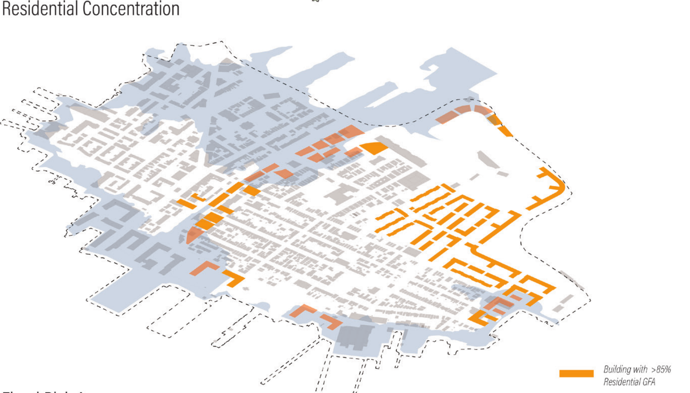
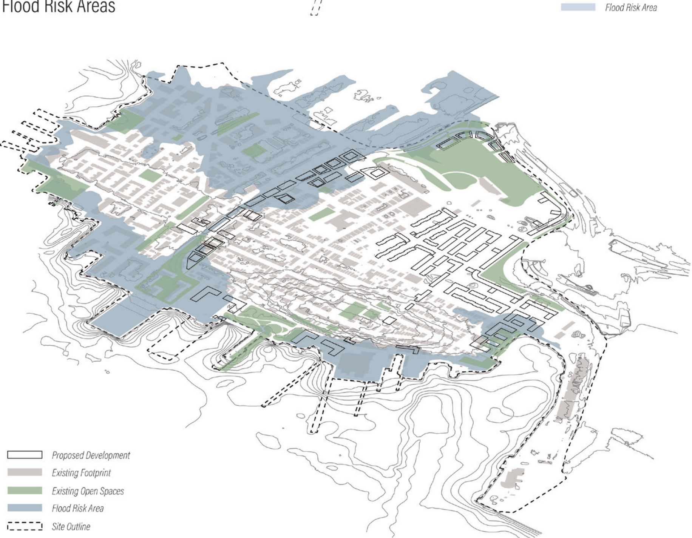
Housing Typologies
To accommodate at least 10,000 new residents while maintaining a strong proportion of affordable housing, the project introduces a new set of housing typologies. These buildings incorporate a diverse range of unit types and sizes, allowing flexibility for different household structures and income levels.
Responding to Site Condition
Housing forms are directly informed by their contexts. Podium blocks place residential units above an active, floodable ground plane connected to the greenway, while the Wall typology shields the neighborhood from highway noise and frames a protected public realm.
Phasing Strategy
The first phase introduces a greenway hub linking two metro stations, capitalizing on the already active urban corridor. The second phase focuses on reopening the waterfront through park development, expanding public access and ecological resilience. Together, these phases fund the delivery of affordable housing across new residential areas and infill developments in the final phase.
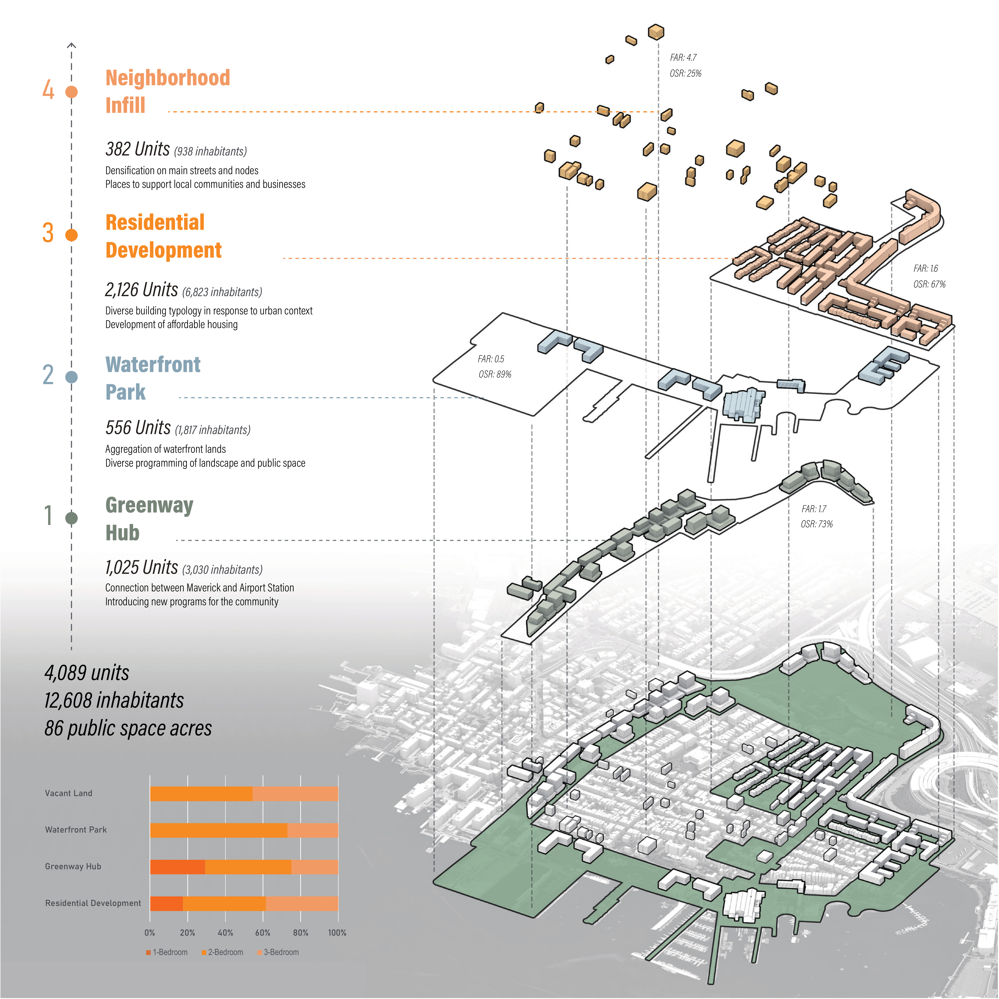
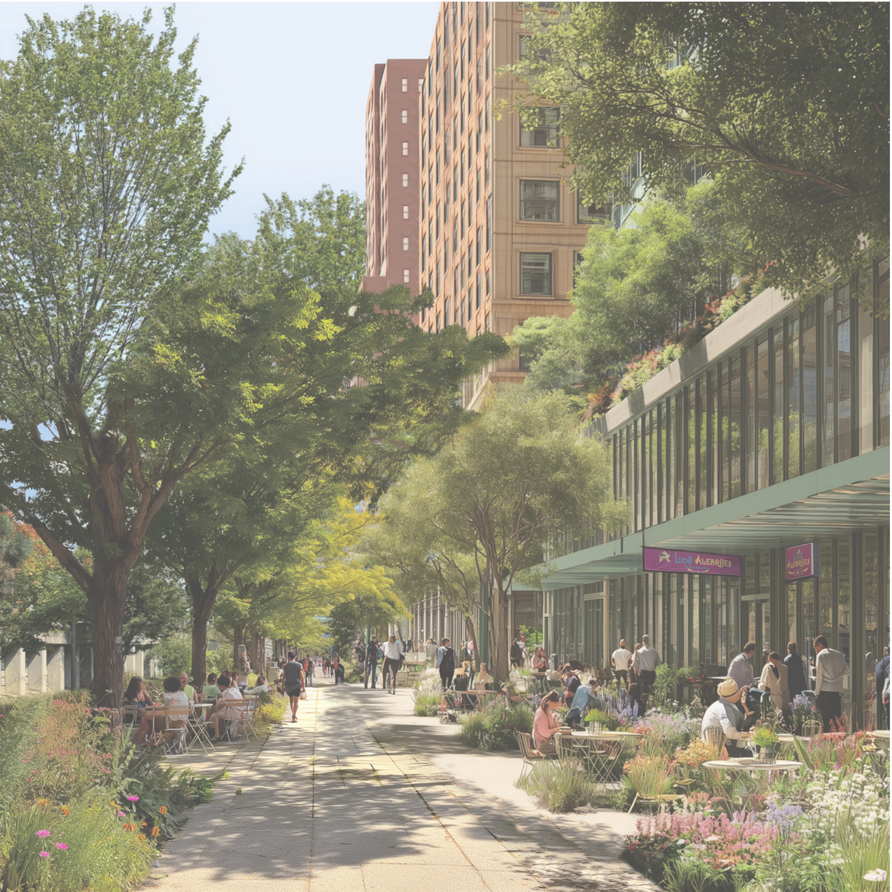
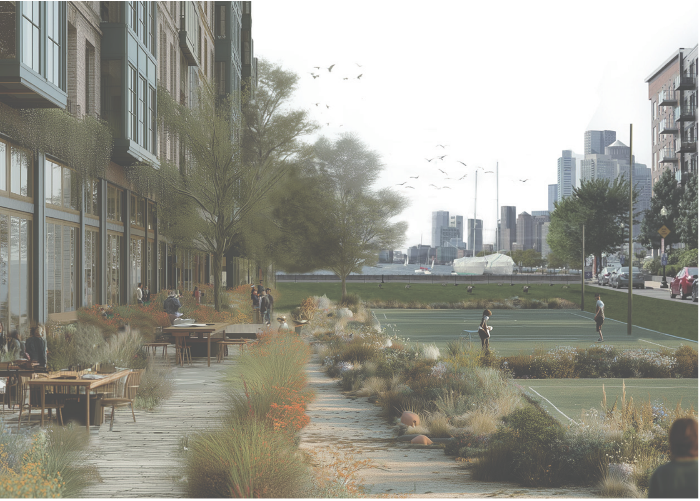
New Public Realm in The Eastie Necklace
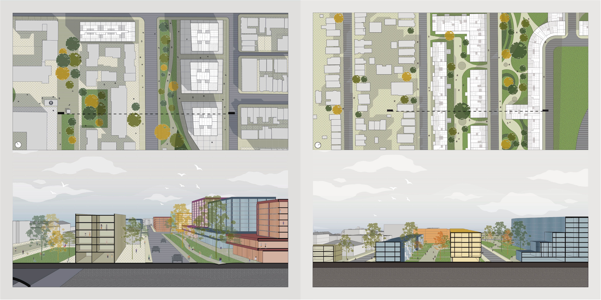